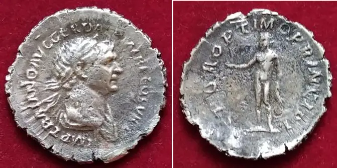

Рымская імперыя. 98–117 гг. пасля Н. Х., рэпрадукцыя.
Дынар – найбольш ўзгадваемая ў Новым Запавеце рымская манета. З дынарам звязана адна з самых вядомых правакацый, здзейсненая першасвятарамі адносна Ісуса Хрыста і Яго знакаміты адказ ім: «Пакажыце Мне дынар. Чый на ім вобраз і надпіс?» Яны, адказваючы сказалі: «Цэзараў». Ён жа сказаў ім: Дык аддавайце тое, што цэзарава, цэзару, а што Божае, — Богу». (Лукі 20:24–25)